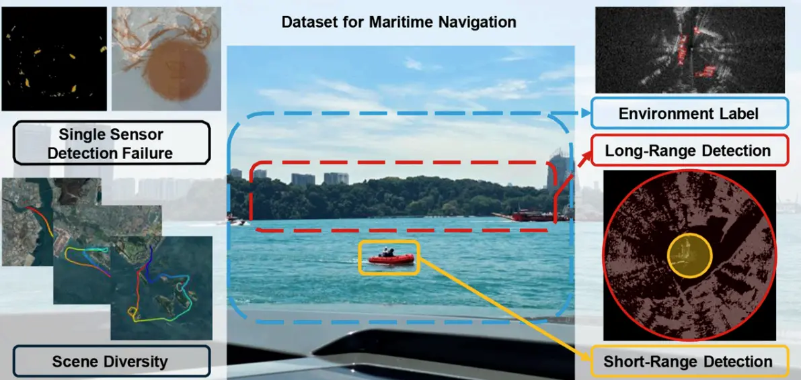
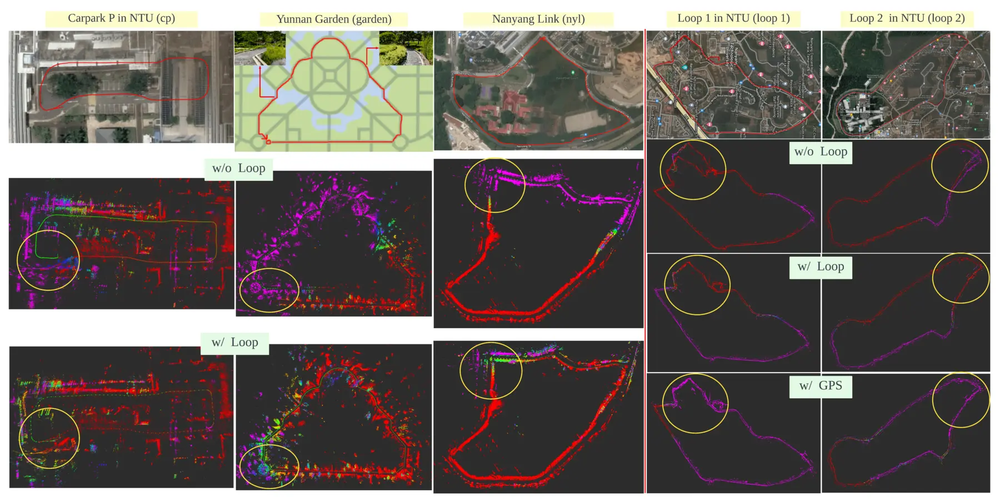

Radar Odometry
Geometry and uncertainty-aware estimation for sparse radar measurements.
Robust Perception and Mobile Robotics Lab Seoul National University
I am a Ph.D. student in Mechanical Engineering at Seoul National University, advised by Prof. Ayoung Kim.
My research focuses on robust state estimation and SLAM using radar, LiDAR, and inertial sensors, with particular interest in challenging environments where measurements are sparse or unreliable.
About
I am a Ph.D. student in Mechanical Engineering at Seoul National University, advised by Prof. Ayoung Kim in the Robust Perception and Mobile Robotics Lab.
My research focuses on radar–inertial odometry, heterogeneous sensor fusion, and SLAM. I am especially interested in making localization reliable when measurements are sparse, asynchronous, or degraded by difficult weather and operating conditions.
Geometry and uncertainty-aware estimation for sparse radar measurements.
Radar, LiDAR, and inertial sensing for resilient mobile robotics.
Mapping, place recognition, and benchmarks across sensor modalities.
News
Research milestones and publication news.
LAPS was accepted to IEEE Robotics and Automation Letters.
RA-LGeometrically-Constrained Radar-Inertial Odometry was accepted to IEEE RA-L.
RA-LXPRESS, our X-band radar place-recognition work, was published in IEEE RA-L.
RA-LGo-RIO was selected as an ICRA Best Paper Award on Robot Perception finalist.
FinalistPublications
Work in robust state estimation, SLAM, and multi-modal perception.
RA-L IEEE Robotics and Automation Letters 11(5)


ICRA Robot PerceptionRA-L IEEE Robotics and Automation Letters 10(12)
ISR Intelligent Service Robotics 17(2)
JKROS Journal of Korea Robotics Society 18(3)
Let’s connect
Find my latest papers, open-source work, and professional updates.